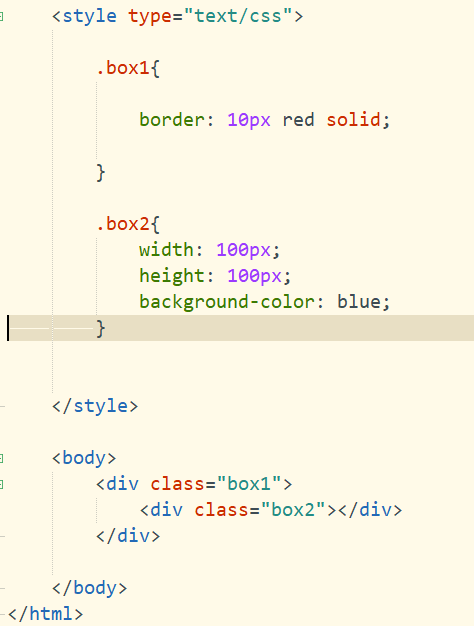
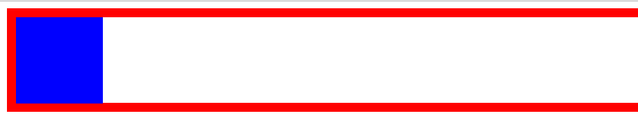
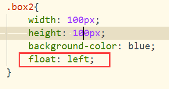
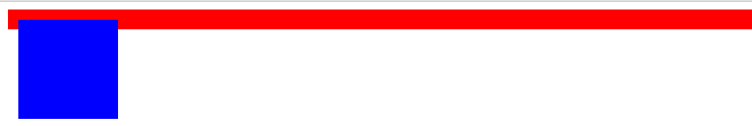
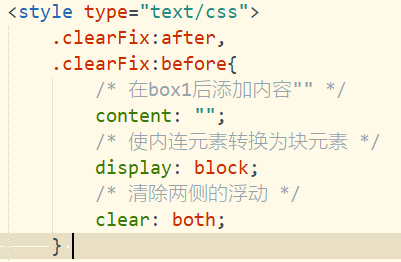
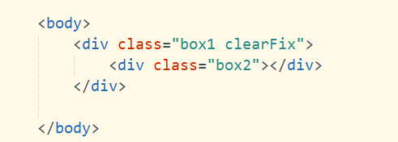

费话不多说，直接上问题：
1.开始时，页面只有两个DIV的嵌套（见图）

运行结果是：

现在看运行的是正常的，但是当我设置让 class="box2" 的DIV浮动时

运行结果是这样的：

图中可以看出，box1中已经没有了任何高度，这是由于box2设置了浮动属性，box2脱离了文档流（也可以理解为box2由于浮动脱离了浏览器页面，浮动在页面之上），box1中没有内容将其撑起
2.解决办法

给 box1添加上 clearFix 类，清除浮动

.clearFix:after,
.clearFix:before{
/* 在box1前后添加内容"" */
content: "";
/* 使内连元素转换为块元素 */
display: block;
/* 清除两侧的浮动 */
clear: both;
}